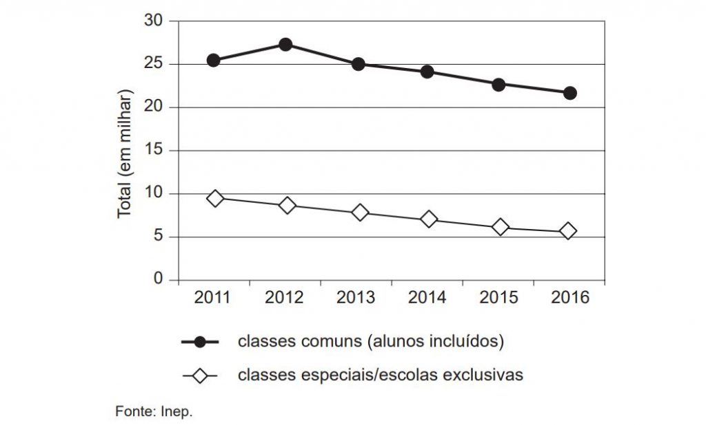

A partir da leitura dos textos motivadores e com base nos conhecimentos construídos
ao longo de sua formação, redija um texto dissertativo-argumentativo em modalidade escrita formal da
língua portuguesa sobre o tema "Desafios para formação educacional de surdos no Brasil", apresentando
proposta de intervenção que respeite os direitos
humanos.
Selecione, organize e relacione, de forma coerente e coesa, argumentos e fatos para defesa de seu ponto
de vista. Não se esqueça: seu texto deve ter mais de 7 (sete) linhas e, no máximo, 30 (trinta)
linhas.
TEXTO I:
CAPÍTULO IV: DO DIREITO À EDUCAÇÃO
Art. 27. A educação constitui direito da pessoa com deficiência, assegurados sistema de educação
inclusivo em todos os níveis e aprendizado ao longo de toda a vida, de forma a alcançar o máximo
desenvolvimento possível de seus talentos e habilidades físicas, sensoriais, intelectuais e sociais,
segundo suas características, interesses e necessidades de aprendizagem.
Parágrafo único. É dever do Estado, da família, da comunidade escolar e da sociedade assegurar educação
de qualidade à pessoa com deficiência, colocando-a a salvo de toda forma de violência, negligência e
discriminação.
Art. 28. Incumbe ao poder público assegurar, criar, desenvolver, implementar, incentivar, acompanhar e
avaliar: […]
IV – oferta de educação bilíngue, em Libras como primeira língua e na modalidade escrita da língua
portuguesa como segunda língua, em escolas e classes bilíngues e em escolas inclusivas; […]
XII – oferta de ensino da Libras, do Sistema Braille e de uso de recursos de tecnologia assistiva, de
forma a ampliar habilidades funcionais dos estudantes, promovendo sua autonomia e participação.
BRASIL. Lei nº 13.146, de 6 de julho de 2015. Disponível em: www.planalto.gov.br. Acesso em: 9 jun. 2017 (fragmento).
TEXTO II:

TEXTO III:
Disponível em: http://servicos.prt4.mpt.mp.br. Acesso em: 3 jun. 2017 (adaptado).
TEXTO IV:
No Brasil, os surdos só começaram a ter acesso à educação durante o Império, no governo de Dom Pedro II,
que criou a primeira escola de educação de meninos surdos, em 26 de setembro de 1857, na antiga capital
do País, o Rio de Janeiro. Hoje, no lugar da escola funciona o Instituto Nacional de Educação de Surdos
(Ines). Por isso, a data foi escolhida como Dia do Surdo.
Contudo, foi somente em 2002, por meio da sanção da Lei nº 10.436, que a Língua Brasileira de Sinais
(Libras) foi reconhecida como segunda língua oficial no País. A legislação determinou também que devem
ser garantidas, por parte do poder público em geral e empresas concessionárias de serviços públicos,
formas institucionalizadas de apoiar o uso e difusão da Libras como meio de comunicação objetiva.
Disponível em: www.brasil.gov.br. Acesso em: 9 jun. 2017 (adaptado).